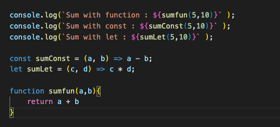
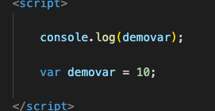
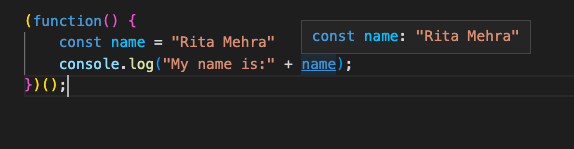

In Javascript wherever the declarations are there.. It appears at the top of the code before execution.
Basicly it is the default behaviour to move the declaration on the top of currunt scope. For example the Variable can be declared even after use.
Javascript only hoists declarations not initializations. The variable will be undefined untill the line where it is intialized to reach.The let and const is not default hoisted in javascript and will not appear as to the top automatically in javascript.
The hoisting with var is works till initialization but not te declared value
But the var declartion at the bottom will not appear the error and return as undefined.
IIFE is usefull when we need to run the syntax for asysc await without any additional function
Basicly it is run as soon as it is define in the syntaxIt is also known as Self-Executing Anonymous Function. The whole syntax holding the two parts:
(fucntion(){
...
...
} ) ();
It avoids the polluting the global namespace and execute async and await.
Also we can can privatly declare the value which will not accessable outside.
It is a technique in functional programming, transformation of the function of multiple arguments into several functions of a single argument in sequence.
In previous exampel we have list of arguments in fucntion which access indivisually and creating a list.
In the following example we use currying technique with the help of closures where an anonymous function, receiving a parameter and returning some code. When we exposign fucnton from another fucntion, it means it creates the clouser which connect functions as a bundle. all inner functions will always hold access to the variable of their parent.
As soon as we have got the returned result as a function the next argument is ready to be passed, this process will continue till the second last function.
It is an optimization technique that can be used to reduce time consuming calcilations by saving previous inut to something called cache and returning the result from it.
Memoization is a technique for speeding up applications by caching the results of expensive function calls and returning them when the same inputs are used again.
Recursion is a process of calling itself. A function that calls itself is called a recursive function.
function recurse() {
...
recurse();
...
}
recurse();
Once the condition is met, the function stops calling itself.
pure function is a function that when given the same inputs always returns the same output. This function also must have absolutely no side effects and rely on no other state besides the input variables.